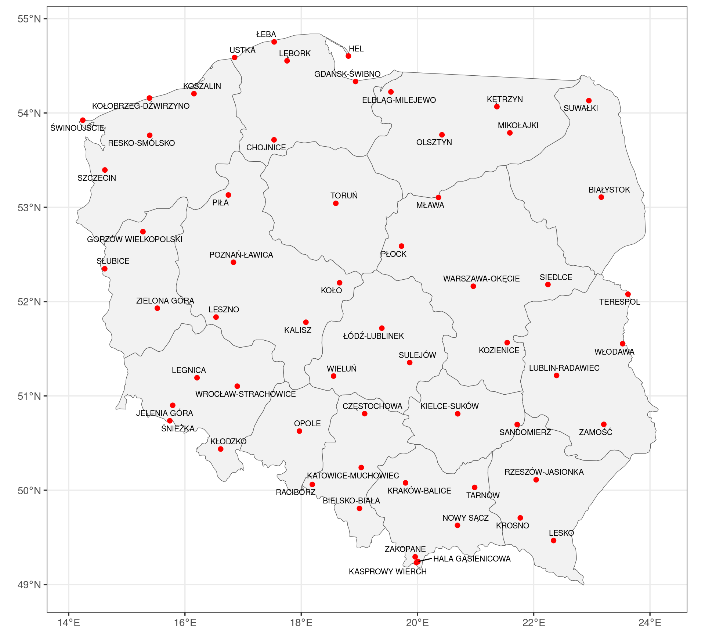
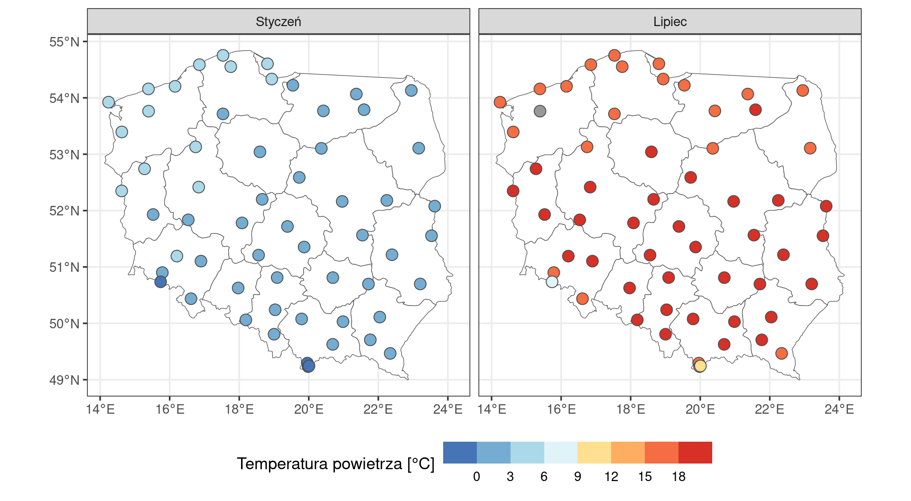
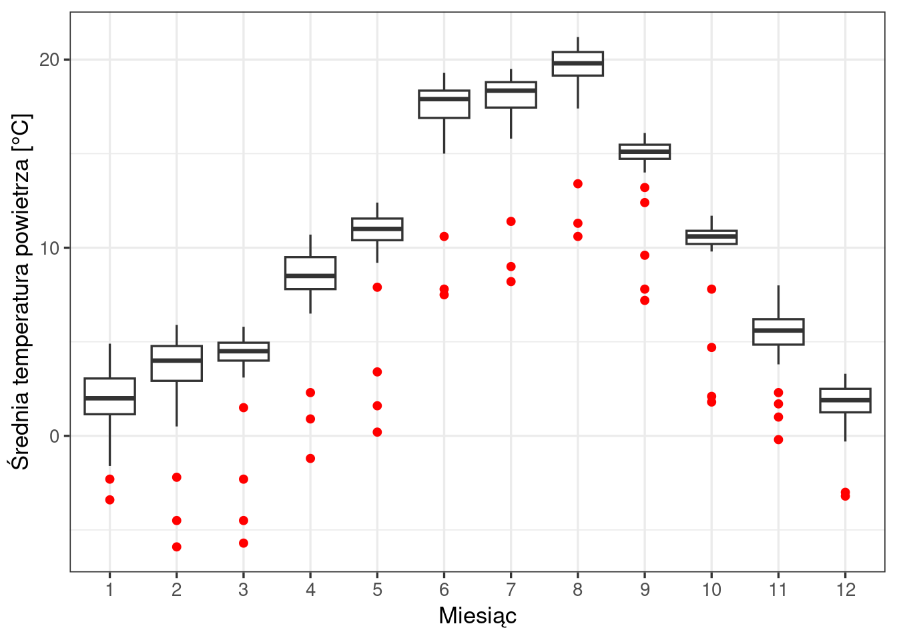
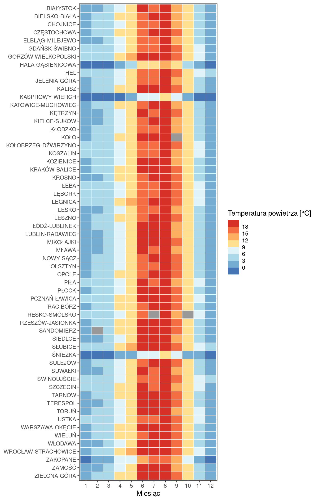
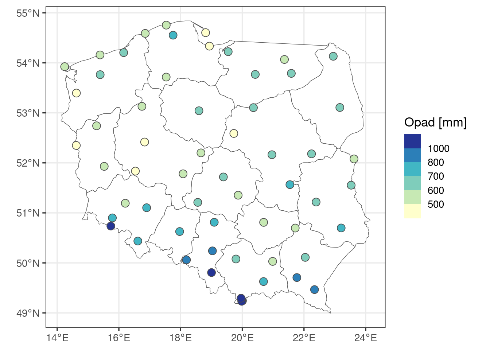
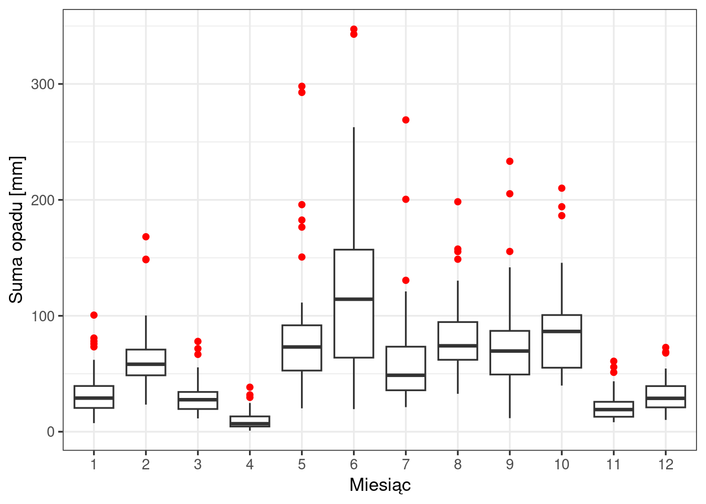
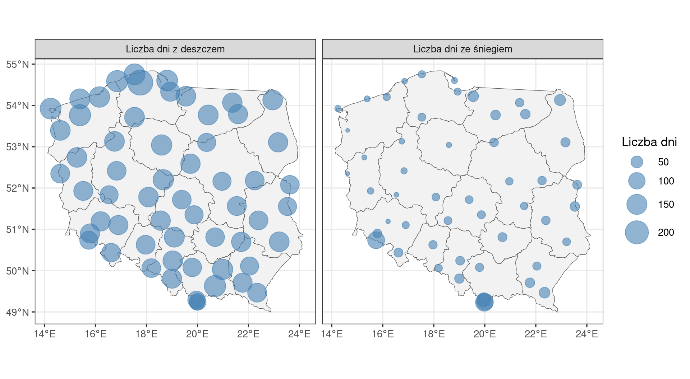
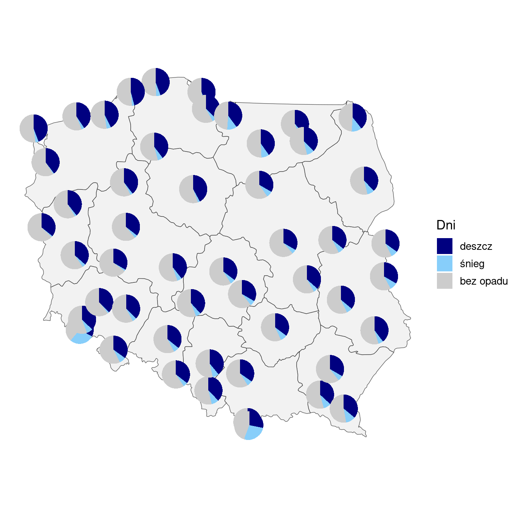
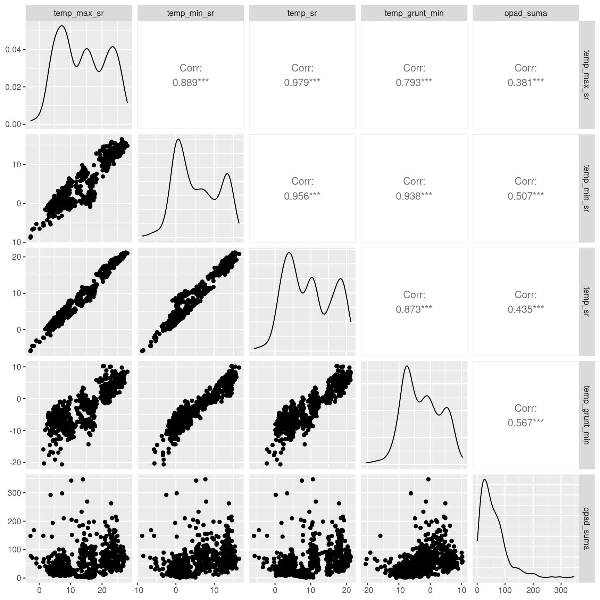

# pakiety: tidyverse (przetwarzanie danych i wykresy), sf (dane przestrzenne)
library(tidyverse)
library(sf)
# wczytanie danych i zamiana kolumn tekstowych na zmienne typu factor
meteo <- read.csv("dane/meteo2020.csv", encoding = "UTF-8") |>
mutate(across(where(is.character), as.factor))22 Warunki meteorologiczne w Polsce w 2020 roku
Jak czytać ten rozdział
Rozdział pokazuje na przykładzie, jak wykonuje się obliczenia dla poszczególnych etapów raportu i jak interpretuje się uzyskane wyniki. Układ rozdziału służy nauce i różni się od typowej konstrukcji raportu: każda sekcja składa się z kodu R z wynikiem, interpretacji — tekstu, który wchodzi do raportu — oraz części Obliczenia w R, która wyjaśnia działanie kodu.
Sekcja Sekcja 22.10 wskazuje, które elementy rozdziału tworzą raport, a plik kod/22_raport.qmd zawiera je w układzie raportu, który można otworzyć i wyrenderować. Kompletny przykład raportu przedstawia Rozdział 23.
22.1 Wprowadzenie
Raport opisuje miesięczne charakterystyki temperatury powietrza i opadu atmosferycznego na 59 stacjach synoptycznych w Polsce w 2020 roku. Pokazuje rozmieszczenie stacji, zróżnicowanie temperatury powietrza i opadów — w przestrzeni i w ciągu roku — oraz zależności między tymi zmiennymi.
Raport odpowiada na pytania badawcze:
- Jak rozmieszczone są stacje pomiarowe? (Sekcja 22.3)
- Jak zróżnicowana jest temperatura powietrza — przestrzennie w styczniu i lipcu oraz w ciągu roku? (Sekcja 22.4)
- Jak zróżnicowane są opady — roczna suma, przebieg w ciągu roku oraz liczba dni z deszczem i ze śniegiem? (Sekcja 22.5)
- Jakie zależności występują między charakterystykami temperatury i opadem? (Sekcja 22.6)
22.2 Dane
22.2.1 Źródło i zakres
Plik meteo2020.csv zawiera miesięczne wartości charakterystyk meteorologicznych dla 59 stacji synoptycznych w 2020 roku. Źródło danych: Instytut Meteorologii i Gospodarki Wodnej – Państwowy Instytut Badawczy (IMGW-PIB). Jednostką obserwacji jest stacja w danym miesiącu — każda stacja występuje w zbiorze 12 razy, a zbiór liczy 59 × 12 = 708 obserwacji.
Warunki korzystania z danych określa regulamin udostępniania danych IMGW-PIB, który wymaga wskazania źródła danych, a w przypadku ich przetworzenia — także informacji o przetworzeniu: Źródłem pochodzenia danych jest Instytut Meteorologii i Gospodarki Wodnej – Państwowy Instytut Badawczy. Dane Instytutu Meteorologii i Gospodarki Wodnej – Państwowego Instytutu Badawczego zostały przetworzone.
| Kolumna | Znaczenie |
|---|---|
id_stacji, stacja |
identyfikator i nazwa stacji |
X_dlugosc_geogr, Y_szerokosc_geogr |
długość i szerokość geograficzna stacji [°] |
wojewodztwo, woj_kod |
nazwa i kod TERYT województwa |
miesiac |
miesiąc (1–12) |
temp_max_abs, temp_min_abs |
absolutna maksymalna i absolutna minimalna temperatura powietrza [°C] |
temp_max_sr, temp_min_sr |
średnia maksymalna i średnia minimalna temperatura powietrza [°C] |
temp_sr |
średnia miesięczna temperatura powietrza [°C] |
temp_grunt_min |
minimalna temperatura przy gruncie [°C] |
opad_suma |
miesięczna suma opadu [mm] |
opad_max_dobowy |
maksymalna dobowa suma opadu w miesiącu [mm] |
dni_deszcz, dni_snieg |
liczba dni z opadem deszczu i z opadem śniegu |
Braki danych. W pliku źródłowym część brakujących pomiarów zapisano jako 0. W materiałach kursu wartości te zastąpiono brakiem danych (puste pole, w R — NA):
- temperatury maksymalne i minimalne w 7 obserwacjach (Koło — luty i wrzesień, Płock — lipiec do września, Sandomierz — luty, Resko-Smólsko — październik), a w części z nich także
temp_sritemp_grunt_min; ponadtotemp_srw Resku-Smólsku w lipcu; temp_grunt_minna Kasprowym Wierchu i Śnieżce we wszystkich miesiącach;dni_sniegna 8 stacjach, na których przez cały rok zapisano 0 dni ze śniegiem (Częstochowa, Koło, Lębork, Nowy Sącz, Płock, Resko-Smólsko, Sandomierz, Tarnów).
22.2.2 Przygotowanie danych
# podsumowanie wszystkich kolumn: miary położenia i liczba braków danych (NA's)
summary(meteo) id_stacji stacja X_dlugosc_geogr Y_szerokosc_geogr
Min. :349190600 BIAŁYSTOK : 12 Min. :14.24 Min. :49.23
1st Qu.:350190566 BIELSKO-BIAŁA : 12 1st Qu.:16.83 1st Qu.:50.70
Median :351220495 CHOJNICE : 12 Median :19.03 Median :51.84
Mean :351710734 CZĘSTOCHOWA : 12 Mean :19.03 Mean :51.97
3rd Qu.:353180250 ELBLĄG-MILEJEWO: 12 3rd Qu.:20.98 3rd Qu.:53.72
Max. :354220195 GDAŃSK-ŚWIBNO : 12 Max. :23.62 Max. :54.75
(Other) :636
wojewodztwo woj_kod miesiac temp_max_abs
małopolskie : 72 Min. : 2.00 Min. : 1.00 Min. : 4.10
pomorskie : 72 1st Qu.:10.00 1st Qu.: 3.75 1st Qu.:14.20
dolnośląskie : 60 Median :18.00 Median : 6.50 Median :22.00
mazowieckie : 60 Mean :17.73 Mean : 6.50 Mean :21.03
wielkopolskie : 60 3rd Qu.:26.00 3rd Qu.: 9.25 3rd Qu.:28.70
zachodniopomorskie: 60 Max. :32.00 Max. :12.00 Max. :35.30
(Other) :324 NA's :7
temp_max_sr temp_min_abs temp_min_sr temp_sr
Min. :-2.80 Min. :-16.7000 Min. :-8.800 Min. :-5.900
1st Qu.: 7.50 1st Qu.: -5.2000 1st Qu.: 0.600 1st Qu.: 4.200
Median :14.00 Median : -1.3000 Median : 4.400 Median : 9.500
Mean :13.96 Mean : -0.6615 Mean : 5.532 Mean : 9.555
3rd Qu.:21.10 3rd Qu.: 4.2000 3rd Qu.:10.700 3rd Qu.:15.600
Max. :28.10 Max. : 12.3000 Max. :16.500 Max. :21.200
NA's :7 NA's :7 NA's :7 NA's :4
temp_grunt_min opad_suma opad_max_dobowy dni_deszcz
Min. :-20.600 Min. : 0.90 Min. : 0.700 Min. : 0.00
1st Qu.: -7.600 1st Qu.: 25.20 1st Qu.: 7.375 1st Qu.: 9.00
Median : -3.200 Median : 46.40 Median :13.500 Median :11.00
Mean : -2.705 Mean : 58.23 Mean :16.730 Mean :11.61
3rd Qu.: 2.000 3rd Qu.: 77.95 3rd Qu.:22.600 3rd Qu.:15.00
Max. : 10.300 Max. :347.30 Max. :97.600 Max. :26.00
NA's :31
dni_snieg
Min. : 0.000
1st Qu.: 0.000
Median : 0.000
Mean : 2.273
3rd Qu.: 3.000
Max. :27.000
NA's :96 Interpretacja. Zbiór zawiera 708 obserwacji z 59 stacji — każda stacja występuje 12 razy. Braki danych dotyczą kolumn temperatury (temp_max_abs, temp_max_sr, temp_min_abs, temp_min_sr — po 7, temp_sr — 4, temp_grunt_min — 31) oraz kolumny dni_snieg (96 braków, 8 stacji × 12 miesięcy). Kolumny opadu i liczby dni z deszczem są kompletne. Średnia miesięczna temperatura przyjmuje wartości od −5,9 do 21,2°C, miesięczna suma opadu — od 0,9 do 347,3 mm. Mediana liczby dni ze śniegiem w miesiącu wynosi 0: w co najmniej połowie obserwacji (stacja–miesiąc) nie było dnia z opadem śniegu.
Obliczenia w R.
read.csv()wczytuje plik tekstowy, w którym wartości oddzielone są przecinkami, i zwraca tabelę. Potok|>przekazuje ją do funkcjimutate().mutate(across(where(is.character), as.factor))zamienia typ kolumn:where(is.character)wybiera wszystkie kolumny tekstowe,as.factorzamienia każdą z nich na factor, czyli typ zmiennej, którym R zapisuje zmienne jakościowe, amutate()zapisuje zmienione kolumny w tabeli. Znak<-zapisuje wynik jako obiekt o nazwiemeteo.NA(ang. not available) oznacza w R brak danych. Puste pole w pliku CSVread.csv()wczytuje w kolumnie liczbowej jakoNA.summary()podaje liczbę braków w pozycjiNA's; dla kolumn typu factor (stacja,wojewodztwo) — liczbę obserwacji w kategoriach, przy czym najrzadsze kategorie łączy w pozycji(Other).- Funkcje obliczające statystyki zwracają
NA, jeśli wśród wartości jest choć jeden brak danych — wynik nie jest wtedy znany. Argumentna.rm = TRUE(ang. remove) pomija braki w obliczeniach; jest używany w dalszej części raportu.
22.3 Sieć stacji synoptycznych
22.3.1 Charakterystyki roczne stacji
# zestawienie roczne dla każdej stacji: suma opadu, liczba dni z deszczem i ze śniegiem
stacje <- meteo |>
group_by(stacja, X_dlugosc_geogr, Y_szerokosc_geogr) |>
summarise(
opad_rok = sum(opad_suma), # roczna suma opadu [mm]
dni_deszcz_rok = sum(dni_deszcz), # roczna liczba dni z deszczem
dni_snieg_rok = sum(dni_snieg), # roczna liczba dni ze śniegiem
.groups = "drop" # usunięcie podziału na grupy
)
# pierwsze wiersze tabeli stacje
head(stacje)# A tibble: 6 × 6
stacja X_dlugosc_geogr Y_szerokosc_geogr opad_rok dni_deszcz_rok dni_snieg_rok
<fct> <dbl> <dbl> <dbl> <int> <int>
1 BIAŁYSTOK 23.2 53.1 640. 139 30
2 BIELSKO-BIAŁA 19.0 49.8 1182. 138 31
3 CHOJNICE 17.5 53.7 574. 145 22
4 CZĘSTOCHOWA 19.1 50.8 728. 149 NA
5 ELBLĄG-MILEJEWO 19.5 54.2 677. 146 41
6 GDAŃSK-ŚWIBNO 18.9 54.3 430. 137 17Obiekt stacje jest tabelą z jednym wierszem dla każdej z 59 stacji. Zawiera nazwę stacji, jej współrzędne geograficzne oraz trzy wartości roczne: sumę opadu (opad_rok) i liczbę dni z deszczem (dni_deszcz_rok) i ze śniegiem (dni_snieg_rok). Stacje bez danych o dniach ze śniegiem mają w kolumnie dni_snieg_rok wartość NA — suma z brakami danych jest nieznana.
22.3.2 Rozmieszczenie stacji
# zamiana tabeli na obiekt przestrzenny: punkty o współrzędnych geograficznych (WGS 84)
stacje_sf <- st_as_sf(stacje,
coords = c("X_dlugosc_geogr", "Y_szerokosc_geogr"),
crs = 4326)
# granice województw (Natural Earth)
wojewodztwa <- st_read("dane/wojewodztwa.gpkg", quiet = TRUE)# pakiet do rozmieszczania etykiet bez nakładania się
library(ggrepel)
# mapa: granice województw, punkty stacji i ich nazwy
ggplot() +
geom_sf(data = wojewodztwa, fill = "grey95") + # tło: granice województw
geom_sf(data = stacje_sf, colour = "red", size = 2) + # stacje
geom_text_repel(data = stacje_sf,
aes(label = stacja, geometry = geometry),
stat = "sf_coordinates", # współrzędne etykiet z geometrii punktów
size = 2.8, max.overlaps = Inf) + # etykiety wszystkich stacji
labs(x = NULL, y = NULL) +
theme_bw(base_size = 13)
Interpretacja. Raport obejmuje 59 stacji synoptycznych rozmieszczonych na całym obszarze Polski (Rycina 22.1): od 14,2°E do 23,6°E i od 49,2°N do 54,8°N. W południowej części kraju kilka stacji leży w górach — w Sudetach (Śnieżka) i w Tatrach (Kasprowy Wierch, Hala Gąsienicowa, Zakopane).
Obliczenia w R.
- Tabela
stacjepowstaje z potoku:group_by()grupuje dane według stacji i jej współrzędnych (współrzędne są stałe dla stacji, więc zostają w wyniku jako kolumny), asummarise()z funkcjąsum()sumuje wartości z 12 miesięcy. Argument.groups = "drop"usuwa podział na grupy po obliczeniach.head()pokazuje pierwsze 6 wierszy. st_as_sf()zamienia zwykłą tabelę na obiekt przestrzennysf. Argumentcoordswskazuje kolumny ze współrzędnymi (najpierw długość, potem szerokość geograficzna), acrs = 4326— układ współrzędnych: kod 4326 oznacza współrzędne geograficzne w stopniach w układzie WGS 84 (Sekcja 5.3, Sekcja 5.5).st_read()wczytuje plik z danymi przestrzennymi — tu granice 16 województw z bazy Natural Earth (domena publiczna), zapisane w formacie GeoPackage (.gpkg). Argumentquiet = TRUEwyłącza komunikat o wczytanym pliku.- Mapa składa się z dwóch warstw
geom_sf(), każda z własnymi danymi (data =): wielokątów województw i punktów stacji. Osie podają współrzędne geograficzne. geom_text_repel()z pakietuggrepeldodaje etykiety z nazwami stacji (label = stacja) i przesuwa je tak, aby nie nachodziły na siebie ani na punkty; przesunięte etykiety połączone są z punktem linią.stat = "sf_coordinates"pobiera położenie etykiet z kolumnygeometryobiektusf,sizeustala wielkość tekstu, amax.overlaps = Infwyświetla etykiety wszystkich stacji, także w miejscach gęstego rozmieszczenia punktów.
22.4 Temperatura powietrza
22.4.1 Zróżnicowanie przestrzenne średniej temperatury w styczniu i lipcu
# obserwacje ze stycznia i lipca jako punkty na mapie
styczen_lipiec <- meteo |>
filter(miesiac %in% c(1, 7)) |> # styczeń i lipiec
st_as_sf(coords = c("X_dlugosc_geogr", "Y_szerokosc_geogr"), crs = 4326)# dwie mapy obok siebie: kolor wypełnienia punktu odpowiada klasie średniej temperatury
ggplot() +
geom_sf(data = wojewodztwa, fill = "white") +
geom_sf(data = styczen_lipiec, aes(fill = temp_sr),
shape = 21, colour = "grey30", size = 4) + # punkt z obwódką
facet_wrap(~ miesiac, # osobny panel dla każdego miesiąca
labeller = as_labeller(c(`1` = "Styczeń", `7` = "Lipiec"))) +
scale_fill_fermenter(breaks = seq(0, 18, by = 3), # granice klas co 3°C
palette = "RdYlBu", direction = -1,
na.value = "grey60") + # stacja bez danych
labs(fill = "Temperatura powietrza [°C]") +
theme_bw(base_size = 13) +
theme(legend.position = "bottom", # legenda pod mapami
legend.key.width = unit(1.5, "cm")) # szerokość pola klasy w legendzie
# średnia temperatura w styczniu i lipcu: liczba stacji z danymi, zakres i mediana
meteo |>
filter(miesiac %in% c(1, 7), !is.na(temp_sr)) |>
group_by(miesiac) |>
summarise(stacje = n(), minimum = min(temp_sr), mediana = median(temp_sr),
maksimum = max(temp_sr))# A tibble: 2 × 5
miesiac stacje minimum mediana maksimum
<int> <int> <dbl> <dbl> <dbl>
1 1 59 -3.4 2 4.9
2 7 58 8.2 18.4 19.5# stacje o najniższej i najwyższej średniej temperaturze w każdym z miesięcy
meteo |>
filter(miesiac %in% c(1, 7)) |>
group_by(miesiac) |>
slice_min(temp_sr, n = 8) |>
select(miesiac, stacja, temp_sr) |>
print(n = 16)# A tibble: 16 × 3
# Groups: miesiac [2]
miesiac stacja temp_sr
<int> <fct> <dbl>
1 1 KASPROWY WIERCH -3.4
2 1 ŚNIEŻKA -2.3
3 1 ZAKOPANE -1.6
4 1 HALA GĄSIENICOWA -0.7
5 1 KROSNO 0.1
6 1 KŁODZKO 0.2
7 1 NOWY SĄCZ 0.3
8 1 LESKO 0.5
9 7 KASPROWY WIERCH 8.2
10 7 ŚNIEŻKA 9
11 7 HALA GĄSIENICOWA 11.4
12 7 ZAKOPANE 15.8
13 7 ELBLĄG-MILEJEWO 16.5
14 7 ŁEBA 16.8
15 7 CHOJNICE 16.9
16 7 LĘBORK 16.9meteo |>
filter(miesiac %in% c(1, 7)) |>
group_by(miesiac) |>
slice_max(temp_sr, n = 5) |>
select(miesiac, stacja, temp_sr) |>
print(n = 11)# A tibble: 11 × 3
# Groups: miesiac [2]
miesiac stacja temp_sr
<int> <fct> <dbl>
1 1 USTKA 4.9
2 1 ŚWINOUJŚCIE 4.7
3 1 SZCZECIN 4.6
4 1 KOŁOBRZEG-DŹWIRZYNO 4.6
5 1 ŁEBA 4.6
6 1 HEL 4.6
7 7 TARNÓW 19.5
8 7 RZESZÓW-JASIONKA 19.3
9 7 WROCŁAW-STRACHOWICE 19.3
10 7 POZNAŃ-ŁAWICA 19.3
11 7 WARSZAWA-OKĘCIE 19.3# liczba stacji w klasach temperatury użytych na mapie
meteo |>
filter(miesiac %in% c(1, 7), !is.na(temp_sr)) |>
mutate(klasa = cut(temp_sr, breaks = c(-Inf, seq(0, 18, by = 3), Inf), right = FALSE)) |>
count(miesiac, klasa) miesiac klasa n
1 1 [-Inf,0) 4
2 1 [0,3) 39
3 1 [3,6) 16
4 7 [6,9) 1
5 7 [9,12) 2
6 7 [15,18) 21
7 7 [18, Inf) 34Interpretacja. W styczniu 2020 roku (Rycina 22.2) średnia temperatura na stacjach wynosiła od −3,4°C (Kasprowy Wierch) do 4,9°C (Ustka); mediana — 2,0°C. Najcieplejsze były stacje na wybrzeżu (Ustka, Świnoujście, Hel, Łeba, Kołobrzeg-Dźwirzyno: 4,6–4,9°C) i Szczecin (4,6°C), najzimniejsze — stacje górskie: Kasprowy Wierch, Śnieżka (−2,3°C), Zakopane (−1,6°C) i Hala Gąsienicowa (−0,7°C). Temperaturę poniżej 0°C miały tylko te cztery stacje.
W lipcu średnia temperatura wynosiła od 8,2°C (Kasprowy Wierch) do 19,5°C (Tarnów); mediana — 18,4°C. Najcieplejsze były stacje w głębi kraju, m.in. Tarnów, Warszawa-Okęcie, Poznań-Ławica, Wrocław-Strachowice i Rzeszów-Jasionka (19,3–19,5°C). Najchłodniejsze, poza stacjami górskimi (8,2–15,8°C), były stacje w pobliżu wybrzeża, np. Elbląg-Milejewo (16,5°C). Dla Reska-Smólska brak danych z lipca (punkt szary).
Układ przestrzenny w obu miesiącach jest odmienny: w styczniu wybrzeże jest cieplejsze od głębi kraju, w lipcu — chłodniejsze. Przy wspólnej skali większość stacji w każdym miesiącu należy do dwóch–trzech klas: w styczniu 39 z 59 stacji do klasy 0–3°C, w lipcu 34 z 58 stacji z danymi do klasy 18°C i więcej.
Obliczenia w R.
filter(miesiac %in% c(1, 7))wybiera obserwacje ze stycznia i lipca: operator%in%sprawdza, czy wartość należy do podanego zbioru wartości.st_as_sf()zamienia obserwacje na punkty — jak przy mapie stacji, ale z miesięcznymi wartościami zamiast rocznych.facet_wrap(~ miesiac)dzieli wykres na dwa panele, po jednym dla każdego miesiąca. Argumentlabellerzastępuje wartości1i7w nagłówkach paneli nazwami miesięcy:as_labeller()przyjmuje wektor, w którym każdej wartości przypisano tekst nagłówka.shape = 21rysuje punkt z obwódką: kolor obwódki ustalacolour, a kolor wypełnienia — mapowaniefill = temp_sr. Obwódka sprawia, że jasne punkty pozostają widoczne na białym tle.- Panele mają wspólną skalę kolorów: ten sam kolor oznacza ten sam przedział temperatury w styczniu i w lipcu.
scale_fill_fermenter()dzieli wartości na klasy o granicach podanych wbreaks— tak jak na mapie w rozdziale „Oczekiwana długość życia na świecie w 2007 roku”.seq(0, 18, by = 3)tworzy granice od 0 do 18°C co 3°C, czyli 8 klas o równej szerokości (poniżej 0°C, 0–3°C, …, 15–18°C, 18°C i więcej). palette = "RdYlBu"to paleta od czerwonego przez żółty do niebieskiego;direction = -1odwraca jej kierunek, tak że niskie temperatury mają kolor niebieski, a wysokie — czerwony.na.value = "grey60"nadaje kolor stacji z brakiem danych (Resko-Smólsko w lipcu).- Tabele pod mapami podają wartości opisane w interpretacji.
slice_min()islice_max()wybierają w każdej grupie wiersze o najmniejszych i największych wartościach;print(n = )wyświetla podaną liczbę wierszy.cut()przypisuje wartości do klas o granicach zbreaks,-InfiInfoznaczają klasy otwarte, aright = FALSEwłącza dolną granicę do klasy. theme(legend.position = "bottom")umieszcza legendę pod mapami. Przy 8 klasach opisy granic klas nachodziłyby na siebie, dlategolegend.key.width = unit(1.5, "cm")poszerza pole każdej klasy w legendzie;unit()podaje wielkość wraz z jednostką.
22.4.2 Zmienność średniej miesięcznej temperatury w ciągu roku
# wykres pudełkowy: jedno pudełko = wartości ze wszystkich stacji w danym miesiącu
ggplot(meteo, aes(x = factor(miesiac), y = temp_sr)) +
geom_boxplot(outlier.colour = "red", na.rm = TRUE) +
labs(x = "Miesiąc", y = "Średnia temperatura powietrza [°C]") +
theme_bw(base_size = 13)
Interpretacja. Mediana średniej miesięcznej temperatury (Rycina 22.3) była najniższa w grudniu (1,9°C) i styczniu (2,0°C), a najwyższa w sierpniu (19,8°C). Wartości odstające występują wyłącznie poniżej pudełek i dotyczą stacji górskich: Kasprowego Wierchu i Śnieżki (we wszystkich 12 miesiącach), Hali Gąsienicowej (10 miesięcy), Zakopanego (5) i Jeleniej Góry (1).
Obliczenia w R.
factor(miesiac)traktuje numer miesiąca jako kategorię:geom_boxplot()rysuje osobne pudełko dla każdego miesiąca. Bez tej zamiany zmienna liczbowa na osi x dałaby jedno pudełko dla wszystkich danych.na.rm = TRUEwgeom_boxplot()pomija braki danych wtemp_srbez wyświetlania ostrzeżenia.- Każde pudełko opisuje rozkład wartości z 59 stacji w jednym miesiącu (dla temperatury — bez braków danych).
# wykres kafelkowy: miesiące na osi x, stacje na osi y (alfabetycznie od góry),
# kolor kafelka = średnia temperatura
ggplot(meteo, aes(x = factor(miesiac),
y = fct_rev(stacja), # odwrócona kolejność: A na górze
fill = temp_sr)) +
geom_tile(colour = "white") + # kafelki z białą obwódką
scale_fill_fermenter(breaks = seq(0, 18, by = 3), # klasy co 3°C
palette = "RdYlBu", direction = -1,
na.value = "grey60") +
labs(x = "Miesiąc", y = NULL, fill = "Temperatura powietrza [°C]") +
theme_bw(base_size = 11)
Interpretacja. Wykres kafelkowy (Rycina 22.4) pokazuje wartości dla wszystkich 59 stacji i 12 miesięcy. Stacje górskie (Kasprowy Wierch, Śnieżka, Hala Gąsienicowa) mają najniższe wartości od lutego do grudnia; w styczniu niższą wartość niż Hala Gąsienicowa (−0,7°C) miało Zakopane (−1,6°C). W miesiącach letnich wiersze tych stacji mają kolory niebieskie i żółte, gdy pozostałe stacje mają kolory pomarańczowe i czerwone. Średnią temperaturę 18°C i wyższą odnotowano tylko w czerwcu (28 stacji), lipcu (34) i sierpniu (55). Szare kafelki oznaczają brak danych.
Obliczenia w R.
geom_tile()rysuje prostokąt (kafelek) w położeniu wyznaczonym przez wartościxiy; kolor wypełnienia odpowiada wartości zmiennejfill. Wykres kafelkowy nazywany jest też mapą ciepła (ang. heatmap).- Stacje na osi y są uporządkowane alfabetycznie — w kolejności poziomów zmiennej typu factor
stacja.ggplot()umieszcza pierwszy poziom na dole osi, dlategofct_rev()(pakietforcats, częśćtidyverse) odwraca kolejność poziomów: stacje na literę A znajdują się na górze wykresu. - Jedna skala kolorów obejmuje wszystkie miesiące: klasy co 3°C (
seq(0, 18, by = 3)), paleta"RdYlBu"zdirection = -1— niskie temperatury mają kolor niebieski, wysokie — czerwony;na.valuenadaje kolor brakom danych.base_size = 11zmniejsza napisy, aby nazwy 59 stacji mieściły się na osi y.
22.5 Opady atmosferyczne
22.5.1 Zróżnicowanie przestrzenne rocznej sumy opadu
# mapa: kolor wypełnienia punktu odpowiada klasie rocznej sumy opadu
ggplot() +
geom_sf(data = wojewodztwa, fill = "white") +
geom_sf(data = stacje_sf, aes(fill = opad_rok),
shape = 21, colour = "grey30", size = 3.5) + # punkt z obwódką
scale_fill_fermenter(breaks = c(500, 600, 700, 800, 1000), # granice klas [mm]
palette = "YlGnBu", direction = 1) +
labs(fill = "Opad [mm]") +
theme_bw(base_size = 13)
Interpretacja. Roczna suma opadu w 2020 roku wynosiła od 410,2 mm (Szczecin) do 1980,0 mm (Hala Gąsienicowa); mediana dla 59 stacji to 633,6 mm (Rycina 22.5). Najniższe sumy wystąpiły w Szczecinie, Płocku (421,0 mm) i Gdańsku-Świbnie (429,6 mm), najwyższe — na Hali Gąsienicowej, Kasprowym Wierchu (1809,9 mm) i w Bielsku-Białej (1182,1 mm). Sumę 1000 mm i więcej odnotowano na 5 stacjach, wszystkie leżą w górach lub na ich przedpolu.
Obliczenia w R.
- Kod powtarza mapę temperatury bez podziału na panele. Punkty pochodzą z tabeli rocznej
stacje_sf, a kolor wypełnienia odpowiada rocznej sumie opadu (fill = opad_rok). - Granice klas w
breaks(500, 600, 700, 800 i 1000 mm) nie wyznaczają klas równej szerokości: ostatnia obejmuje wartości od 1000 mm wzwyż, aby kilka stacji górskich nie zajmowało większości skali.palette = "YlGnBu"to paleta sekwencyjna od żółtego przez zielony do niebieskiego.
22.5.2 Zmienność miesięcznych sum opadu w ciągu roku
ggplot(meteo, aes(x = factor(miesiac), y = opad_suma)) +
geom_boxplot(outlier.colour = "red") +
labs(x = "Miesiąc", y = "Suma opadu [mm]") +
theme_bw(base_size = 13)
Interpretacja. Mediana miesięcznej sumy opadu (Rycina 22.6) była najniższa w kwietniu (6,9 mm), a najwyższa w czerwcu (114,3 mm). Zróżnicowanie między stacjami jest największe w czerwcu — pudełko dla czerwca jest najwyższe — a najmniejsze w kwietniu i listopadzie. Najwyższą miesięczną sumę opadu odnotowano na Hali Gąsienicowej w czerwcu (347,3 mm). Wartości odstające (41 obserwacji) leżą powyżej pudełek; najczęściej dotyczą Hali Gąsienicowej i Kasprowego Wierchu (po 11 miesięcy).
Obliczenia w R. Kod powtarza wykres pudełkowy temperatury; zmieniają się zmienna na osi y (opad_suma) i podpis osi. Kolumna opad_suma nie ma braków danych, dlatego na.rm nie jest potrzebne.
22.5.3 Dni z opadem deszczu i śniegu
# zamiana tabeli z postaci szerokiej na długą: jedna kolumna z rodzajem opadu
dni_dlugie <- stacje_sf |>
pivot_longer(
cols = c(dni_deszcz_rok, dni_snieg_rok), # kolumny do połączenia
names_to = "rodzaj", # nowa kolumna z nazwą kolumny źródłowej
values_to = "dni" # nowa kolumna z wartością
) |>
filter(!is.na(dni)) # pominięcie stacji bez danych# dwa kartodiagramy obok siebie: wielkość punktu = liczba dni
ggplot() +
geom_sf(data = wojewodztwa, fill = "grey95") +
geom_sf(data = dni_dlugie, aes(size = dni), colour = "steelblue", alpha = 0.6) +
facet_wrap(~ rodzaj, # osobny panel dla rodzaju opadu
labeller = as_labeller(c(dni_deszcz_rok = "Liczba dni z deszczem",
dni_snieg_rok = "Liczba dni ze śniegiem"))) +
scale_size_area(max_size = 12) + # zakres wielkości punktów
labs(size = "Liczba dni") +
theme_bw(base_size = 13)
Te same liczby dni można przedstawić jako udział w roku. Kartodiagram strukturalny, czyli wykresy kołowe w położeniu stacji, pokazuje dodatkowo liczbę dni bez opadu.
# pakiet do wykresów kołowych w położeniu punktów
library(scatterpie)
# stacje z kompletem danych; liczba dni bez opadu (2020 - rok przestępny, 366 dni)
struktura <- stacje_sf |>
filter(!is.na(dni_snieg_rok)) |>
mutate(dni_bez_opadu_rok = 366 - dni_deszcz_rok - dni_snieg_rok)
# współrzędne w układzie metrycznym PUWG 1992 (EPSG:2180), aby koła nie były zniekształcone
xy <- st_coordinates(st_transform(struktura, 2180))
struktura <- struktura |>
st_drop_geometry() |> # zwykła tabela bez geometrii
mutate(x = xy[, 1], y = xy[, 2])# kartodiagram strukturalny: wykres kołowy w położeniu każdej stacji
ggplot() +
geom_sf(data = st_transform(wojewodztwa, 2180), fill = "grey95") +
geom_scatterpie(data = struktura, aes(x = x, y = y),
cols = c("dni_deszcz_rok", "dni_snieg_rok", "dni_bez_opadu_rok"),
pie_scale = 2, colour = NA) +
scale_fill_manual(values = c(dni_deszcz_rok = "navy",
dni_snieg_rok = "lightskyblue",
dni_bez_opadu_rok = "grey80"),
labels = c("deszcz", "śnieg", "bez opadu")) +
labs(fill = "Dni") +
coord_sf(crs = 2180) +
theme_void(base_size = 13)
Interpretacja. Roczna liczba dni z deszczem (Rycina 22.7) wynosiła od 83 (Kasprowy Wierch) do 236 (Lębork; stacja bez danych o dniach ze śniegiem), mediana — 138 dni. Najmniej dni z deszczem miały stacje tatrzańskie: Kasprowy Wierch, Hala Gąsienicowa (103) i Zakopane (110). Liczba dni ze śniegiem (51 stacji z danymi) wynosiła od 4 (Szczecin) do 114 (Kasprowy Wierch), mediana — 22 dni. Ponad 100 dni ze śniegiem odnotowano wyłącznie na stacjach górskich: na Kasprowym Wierchu, Śnieżce (104) i Hali Gąsienicowej (101).
Kartodiagram strukturalny (Rycina 22.8) pokazuje podział roku na dni z deszczem, ze śniegiem i bez opadu. Na większości stacji dni bez opadu stanowią ponad połowę roku: ich liczba wynosi od 142 (Śnieżka) do 237 (Leszno), mediana — 205 dni. Udział dni ze śniegiem jest wyraźnie większy na stacjach górskich.
Liczba dni bez opadu została obliczona jako 366 minus liczba dni z deszczem i ze śniegiem. Obliczenie jest poprawne, ponieważ kategorie są rozłączne: jeden dzień jest liczony jako dzień z deszczem albo jako dzień ze śniegiem.
Obliczenia w R.
Kartodiagramy punktowe:
pivot_longer()zamienia tabelę z postaci szerokiej (osobna kolumna dla dni z deszczem i dni ze śniegiem) na postać długą: każda stacja ma dwa wiersze, kolumnarodzajzawiera nazwę kolumny źródłowej, a kolumnadni— wartość. Postać długa jest potrzebna, aby jeden wykres mógł użyć rodzaju opadu jako zmiennej (tu — do podziału na panele).filter(!is.na(dni))usuwa wiersze z brakiem danych;!oznacza zaprzeczenie („nie jest brakiem danych”).- Mapowanie
size = dninadaje punktom wielkość zależną od liczby dni — mapa z takimi znakami to kartodiagram.scale_size_area(max_size = 12)ustala pole punktu proporcjonalne do wartości (wartość 0 ma wielkość 0) i największą wielkość punktu.alpha = 0.6ustala przezroczystość punktów, dzięki której widać punkty nachodzące na siebie (Sekcja 5.7.5). facet_wrap(~ rodzaj)dzieli wykres na panele, po jednym dla każdej wartości zmiennejrodzaj; panele mają wspólną skalę wielkości punktów. Argumentlabellerzastępuje nazwy kolumn w nagłówkach paneli opisami — jak na mapach temperatury.
Kartodiagram strukturalny:
- Pakiet
scatterpiedodaje funkcjęgeom_scatterpie(), która rysuje wykres kołowy w punkcie o współrzędnychx,y. Argumentcolswskazuje kolumny z liczbami dni,pie_scale— wielkość kół. geom_scatterpie()rysuje koła we współrzędnych danych. We współrzędnych geograficznych (stopnie) koła byłyby na mapie spłaszczone, dlatego punkty i granice przekształcono funkcjąst_transform()do układu metrycznego PUWG 1992 (kod EPSG 2180), w którym jednostką są metry.st_coordinates()zwraca współrzędne punktów,st_drop_geometry()usuwa z obiektu kolumnę geometrii, acoord_sf(crs = 2180)ustala układ współrzędnych całej mapy (Sekcja 5.7.7).scale_fill_manual()przypisuje kolory kategoriom (values) i nadaje im nazwy w legendzie (labels).
22.6 Analiza korelacji parametrów meteorologicznych
library(GGally)
# wybór pięciu zmiennych do analizy korelacji
zmienne <- meteo |>
select(temp_max_sr, temp_min_sr, temp_sr, temp_grunt_min, opad_suma)
# macierz wykresów rozrzutu; nad przekątną współczynnik korelacji Spearmana
ggpairs(zmienne,
upper = list(continuous = wrap("cor", method = "spearman")))
Interpretacja. Macierz wykresów rozrzutu (Rycina 22.9) pokazuje dodatnie zależności między wszystkimi parami zmiennych. Dla par średnich temperatur punkty układają się blisko linii prostej; zależności z temperaturą przy gruncie mają większy rozrzut. Na wykresach temperatur z sumą opadu punkty są silnie rozproszone, a wysokie sumy opadu (powyżej 200 mm) występują nielicznie. Rozkład sumy opadu (przekątna) jest wyraźnie asymetryczny prawostronnie.
Ze względu na asymetryczny rozkład sumy opadu i obecność wartości odstających zastosowano współczynnik korelacji Spearmana. Korelacje między charakterystykami temperatury są bardzo wysokie albo prawie pełne (Sekcja 11.4): od 0,79 (temperatura maksymalna i minimalna przy gruncie) do 0,98 (średnia temperatura maksymalna i średnia temperatura). Korelacje temperatur z sumą opadu są przeciętne: od 0,38 (średnia temperatura maksymalna) do 0,57 (minimalna temperatura przy gruncie). Przy każdym współczynniku znajdują się trzy gwiazdki — wartość p testu istotności jest mniejsza od 0,001, więc każda z korelacji jest istotna statystycznie (próg 0,05).
Obserwacje obejmują wszystkie stacje i wszystkie miesiące, więc współczynnik łączy zróżnicowanie między miesiącami i między stacjami. Wykresy pudełkowe (Sekcja 22.4, Sekcja 22.5) pokazują, że w miesiącach letnich temperatura przyjmuje wyższe wartości niż w zimowych. Suma opadu przyjmuje wyższe wartości w czerwcu i sierpniu; mediana lipca (48,7 mm) jest niższa od mediany lutego (58,2 mm).
Obliczenia w R.
select()wybiera pięć kolumn do analizy; wynik zapisano jakozmienne.ggpairs()z pakietuGGallyrysuje macierz wykresów rozrzutu: pod przekątną — wykres rozrzutu dla każdej pary zmiennych, na przekątnej — krzywą gęstości rozkładu każdej zmiennej, nad przekątną — współczynnik korelacji.- Argument
upperustala, co pojawia się nad przekątną.wrap("cor", method = "spearman")wybiera współczynnik korelacji Spearmana (domyślnieggpairs()podaje współczynnik Pearsona). - Gwiazdki przy współczynniku podają wynik testu istotności (funkcja
cor.test()):***— wartość p mniejsza od 0,001,**— mniejsza od 0,01,*— mniejsza od 0,05,.— mniejsza od 0,10; brak znaku — wartość p równa 0,10 lub większa. - Pary z brakiem danych w jednej ze zmiennych są pomijane przy obliczaniu współczynnika.
22.7 Wnioski
- Sieć stacji (Sekcja 22.3). 59 stacji synoptycznych pokrywa obszar całej Polski; kilka z nich leży w Sudetach i Tatrach.
- Temperatura powietrza (Sekcja 22.4). W styczniu najcieplejsze były stacje na wybrzeżu (do 4,9°C), w lipcu — stacje w głębi kraju (do 19,5°C); stacje górskie były najzimniejsze w obu miesiącach. Mediana średniej miesięcznej temperatury wynosiła od 1,9°C (grudzień) do 19,8°C (sierpień).
- Opady atmosferyczne (Sekcja 22.5). Roczna suma opadu wynosiła od 410,2 mm (Szczecin) do 1980,0 mm (Hala Gąsienicowa), mediana — 633,6 mm; najwyższe sumy odnotowano na stacjach górskich. Mediana miesięcznej sumy opadu wynosiła od 6,9 mm (kwiecień) do 114,3 mm (czerwiec). Mediana rocznej liczby dni z deszczem wynosiła 138, ze śniegiem — 22; ponad 100 dni ze śniegiem odnotowano tylko na stacjach górskich.
- Korelacja parametrów meteorologicznych (Sekcja 22.6). Korelacje charakterystyk temperatury są bardzo wysokie albo prawie pełne (współczynnik Spearmana 0,79–0,98); korelacje temperatur z sumą opadu są przeciętne (0,38–0,57). Wszystkie korelacje są istotne statystycznie.
22.8 Wybór sposobu prezentacji wyników
Raport przedstawia te same dane w kilku formach. Ich porównanie pokazuje, które formy przekazały informację czytelnie, a które słabiej:
- Mapa stacji z nazwami (Rycina 22.1) — pozwala odnaleźć każdą stację wymienianą w tekście. W Tatrach etykiety są zagęszczone, ale czytelne.
- Mapa rocznej sumy opadu (Rycina 22.5) — klasy o nierównej szerokości wyraźnie wyróżniają stacje górskie i podgórskie, a jednocześnie różnicują stacje nizinne.
- Mapy temperatury w styczniu i lipcu (Rycina 22.2) — w każdym miesiącu większość stacji należy do dwóch–trzech klas, więc mapy są słabo zróżnicowane i niosą mało informacji. Różnica między miesiącami jest widoczna także na wykresie pudełkowym i kafelkowym, a odmienny układ przestrzenny (cieplejsze wybrzeże zimą, chłodniejsze latem) wymaga odczytania z tekstu interpretacji.
- Wykresy pudełkowe według miesięcy (Rycina 22.3, Rycina 22.6) — w zwartej formie pokazują cykl roczny, rozrzut między stacjami i wartości odstające; nie wskazują jednak, których stacji dotyczą wartości.
- Wykres kafelkowy temperatury (Rycina 22.4) — pokazuje wszystkie wartości i pozwala odczytać każdą stację osobno; stacje górskie wyróżniają się w każdym miesiącu. Zajmuje dużo miejsca, a alfabetyczna kolejność stacji nie oddaje ich położenia.
- Kartodiagramy liczby dni z opadem (Rycina 22.7) — dla dni ze śniegiem (od 4 do 114 dni) różnice wielkości punktów są wyraźne; dla dni z deszczem większość stacji ma podobne wartości (pierwszy kwartyl 129,5, trzeci kwartyl 145,5 dnia), więc punkty mają prawie tę samą wielkość. Dwie mapy obok siebie nie pokazują relacji między rodzajami opadu na stacji: wymagają porównywania wielkości punktów między panelami, a liczby dni bez opadu nie przedstawiają wcale.
- Kartodiagram strukturalny (Rycina 22.8) — na jednej mapie pokazuje strukturę roku na każdej stacji: udział dni z deszczem, ze śniegiem i bez opadu. Pozwala wskazać stacje o większym udziale dni z deszczem, ze śniegiem albo bez opadu — wyraźnie wyróżniają się stacje górskie z dużym udziałem dni ze śniegiem i mniejszą liczbą dni bez opadu. Ponieważ kategorie są rozłączne, a ich suma na każdej stacji wynosi 366 dni, wielkość wycinka jest proporcjonalna do liczby dni, więc koła są porównywalne między stacjami. Ograniczeniem jest nakładanie się kół w Tatrach i w Sudetach; niewielkie różnice (np. 130 i 145 dni z deszczem) są słabo widoczne, podobnie jak na kartodiagramach liczby dni.
- Macierz wykresów rozrzutu (Rycina 22.9) — na jednej rycinie pokazuje kształt zależności, rozkłady zmiennych oraz współczynniki korelacji z wynikiem testu istotności.
W raporcie właściwym wystarczyłyby: mapa stacji, mapa rocznej sumy opadu, jedna forma przedstawienia temperatury w ciągu roku (wykres pudełkowy, gdy celem jest cykl roczny, albo wykres kafelkowy, gdy istotne są poszczególne stacje), kartodiagram strukturalny oraz macierz wykresów rozrzutu. Z map temperatury w styczniu i lipcu oraz z kartodiagramów liczby dni z opadem można zrezygnować.
22.9 Zadania do samodzielnego wykonania
Zadania polegają na zmianie jednego elementu w kodzie pokazanym w raporcie.
Zadanie 1. Roczny przebieg innej zmiennej. Wykonaj wykres pudełkowy według miesięcy dla innej zmiennej, np. maksymalnej dobowej sumy opadu (opad_max_dobowy) albo najniższej temperatury powietrza (temp_min_abs). Porównaj miesiące, w których zróżnicowanie między stacjami jest największe.
Zadanie 2. Mapa innej wartości. Wykonaj mapę stacji, na której kolor punktu odpowiada rocznej liczbie dni ze śniegiem (dni_snieg_rok) zamiast rocznej sumy opadu. Granice klas w argumencie breaks dostosuj do zakresu tej zmiennej.
22.10 Od przykładu do raportu
Plik kod/22_raport.qmd zawiera wyłącznie te elementy rozdziału, które wchodzą do raportu. Ryciny dobrano zgodnie z Sekcja 22.8. Plik otwiera się w RStudio i renderuje przyciskiem Render (Sekcja 7.6).
| Część raportu | Element rozdziału | Opracowanie w pliku |
|---|---|---|
| Wprowadzenie | Wprowadzenie | pytania badawcze ograniczone do treści zachowanych w raporcie |
| Dane | Źródło i zakres, braki danych | tabela zmiennych z raportu, uzupełniona o jednostkę i skalę pomiarową |
| Metody | — | nowa część: miary, formy prezentacji wyników, uzasadnienie wyboru współczynnika korelacji, oprogramowanie |
| Wyniki | interpretacje; mapa stacji (Rycina 22.1), wykres pudełkowy temperatury (Rycina 22.3), mapa rocznej sumy opadu (Rycina 22.5), kartodiagram strukturalny (Rycina 22.8), macierz wykresów rozrzutu (Rycina 22.9) | tekst poprzedza tabele i ryciny; dodana tabela statystyk temperatury według miesiąca |
| Wnioski | Wnioski | odpowiedzi na pytania badawcze z odesłaniem do sekcji wyników |
| Źródła | — | nowa część: źródła danych i granic województw |
Do raportu nie wchodzą: mapy temperatury w styczniu i lipcu, wykres kafelkowy, wykres pudełkowy opadu, kartodiagramy liczby dni z opadem, tabele pomocnicze, części Obliczenia w R, sekcja „Wybór sposobu prezentacji wyników” i zadania.